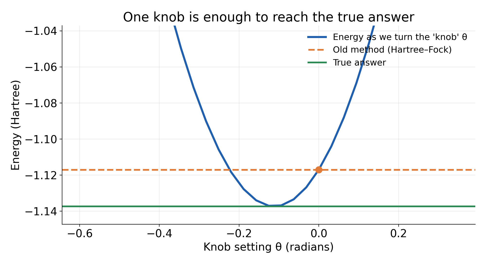
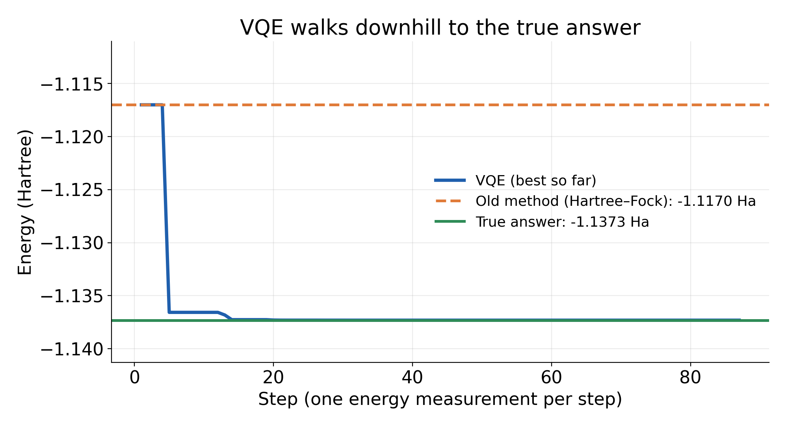
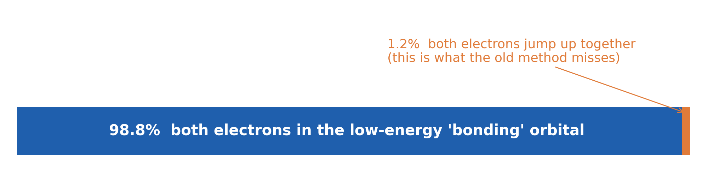
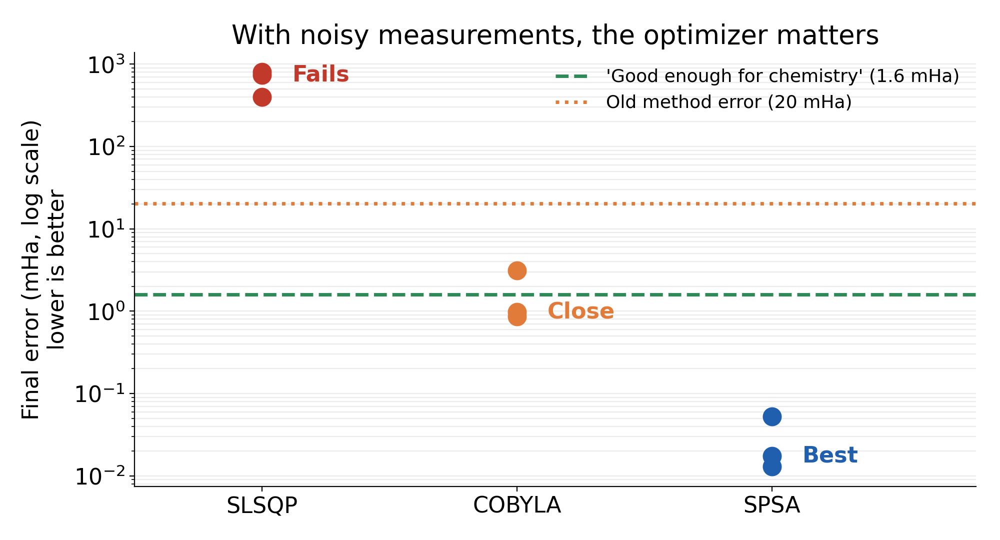
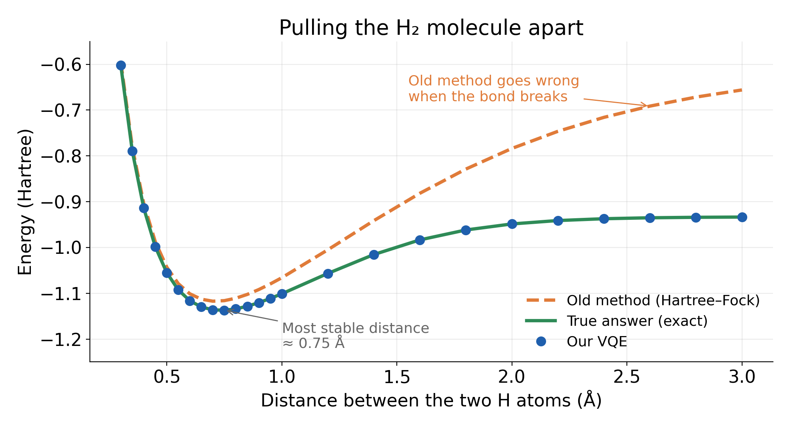

Variational Quantum Eigensolver (VQE) on hydrogen, H₂
Challenge 01 · VQEIntermediate
Team Cdevi Code · Arjun Sharma Poudel · Shanti Thapa
Qiskit Fall Fest 2026 · NC A&T State University
Think of a radio: we turn the knobs until the static (the energy) is as low as it can go. Physics guarantees we can never go below the true answer.





Thank you! Questions?